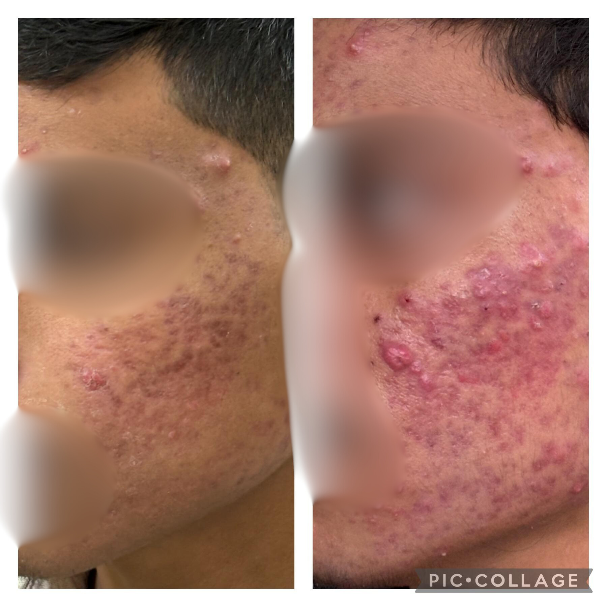

Acne Treatment

Acne is a common skin condition that occurs when hair follicles become clogged with oil and dead skin cells. It often presents as whiteheads, blackheads, pimples, or deeper cystic lesions, primarily on the face, chest, back, and shoulders. Acne is caused by hormonal changes, excess sebum production, bacterial infections, and inflammation. Stress, certain diets, and improper skincare can exacerbate the condition.
The visible effects of acne range from mild blemishes to painful nodules, often leaving scars or hyperpigmentation. Understanding your skin type and the root cause of acne is crucial for effective treatment, which may include topical medications, oral therapies, or advanced dermatological procedures.